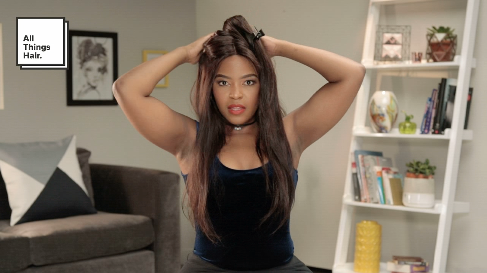
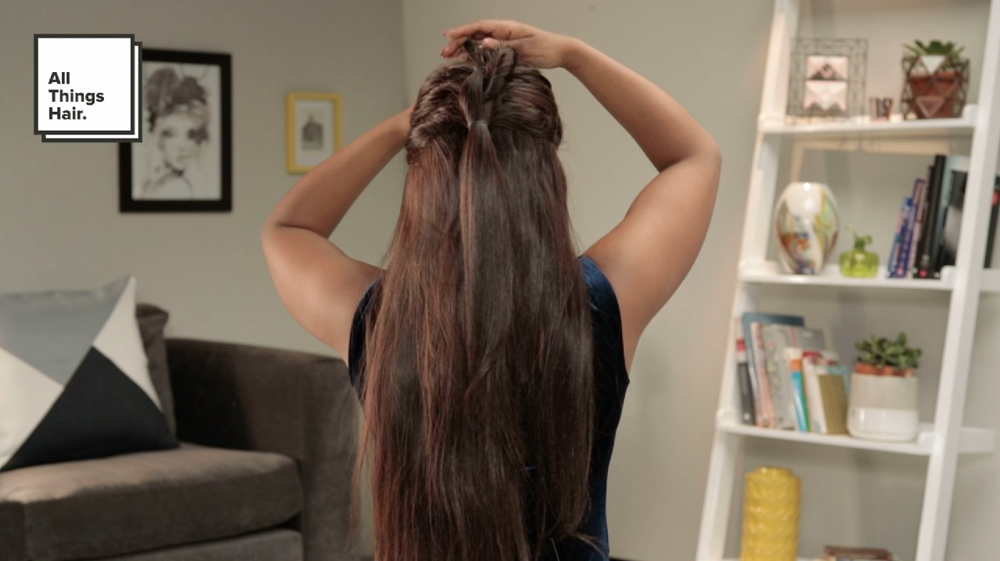
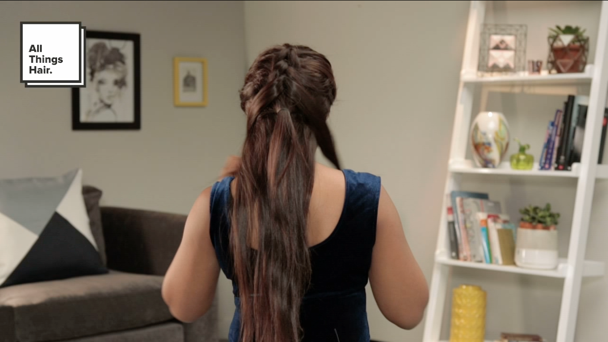

Pulled Dutch Braid
So braids are huge on the fashion scene now, and one of the most iconic is the classic Dutch braid. Everyone is doing it. But here’s the thing: it’s kind of difficult to do, especially if you’re new to this braiding business. So we’ve taken the liberty of putting together some easy steps to make a faux Dutch braid, the Pulled Dutch Braid. We call it this, because there is no braiding involved.

Step 1: Wash your hair
This style involves a lot of pulling, tugging, and little ponytails. This can really take a toll on your hair so we recommend you wash your hair with the Dove Intensive Repair Shampoo and Daily Treatment Conditioner, to keep your hair nourished and protected.
Step 2: Using your forehead as a guide, section off the top part of your hair in line with the middle of your forehead, and tie it with a small elastic. Pin the ponytail to the top of your head (to keep it separate from the rest of the hair). Remember, all elastics must match the colour of your hair.
Step 3: Again, using your forehead as a guide, section off the top part of your hair in line with the area just above your eyebrows, and tie it with a small elastic, just below the first ponytail. Drop the pinned ponytail down over the second. Divide it into two equal parts and bring each part around the second ponytail and clip up the second ponytail. Repeat these steps, sectioning off lower and lower pieces of hair until you reach the end of your hair and tie it off with an elastic band.
Step 4: If you want to make your braid thicker, simply tug gently on the tied up pieces of hair. Your pulled Dutch braid is ready to go!
 Dove Intensive Repair
Dove Intensive Repair
Shampoo
 Dove Intensive Repair
Dove Intensive Repair
Express Treatment Conditioner
 Dove Pure Care Dry
Dove Pure Care Dry
Oil Nourishing Treatment
 Salon Finish Firm
Salon Finish Firm
Hold Hairspray